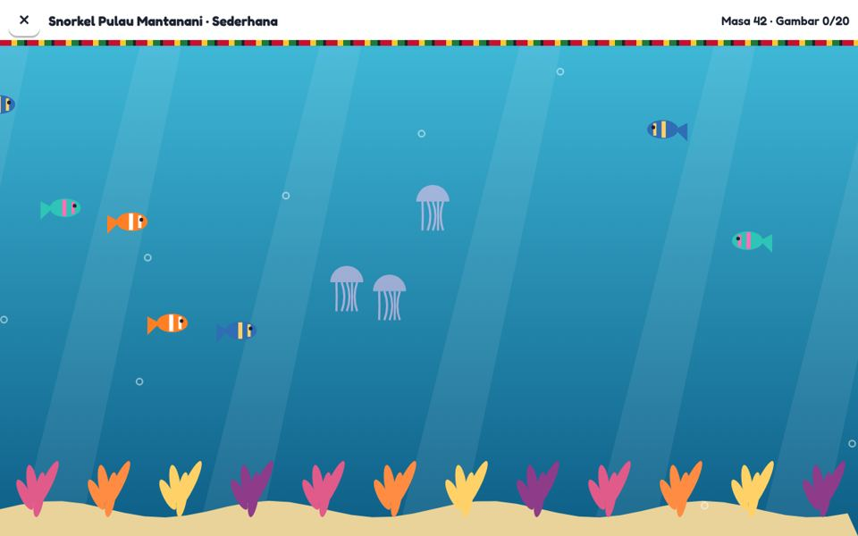
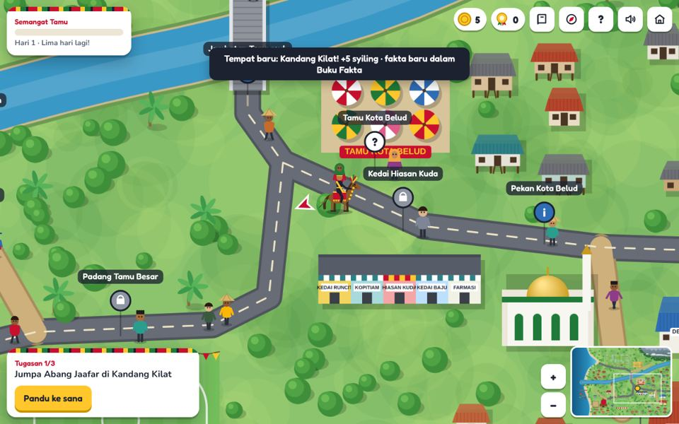
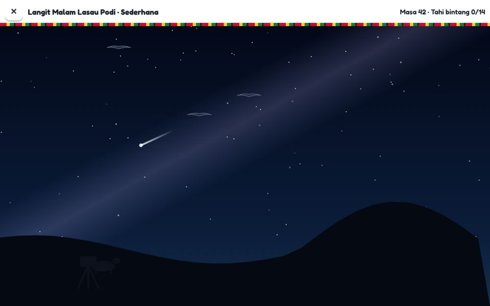
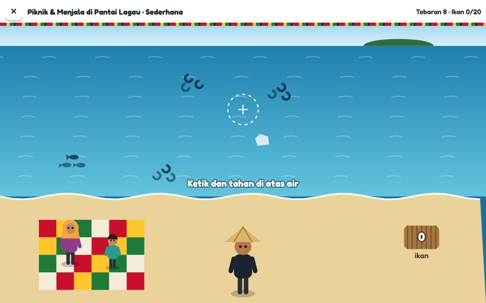
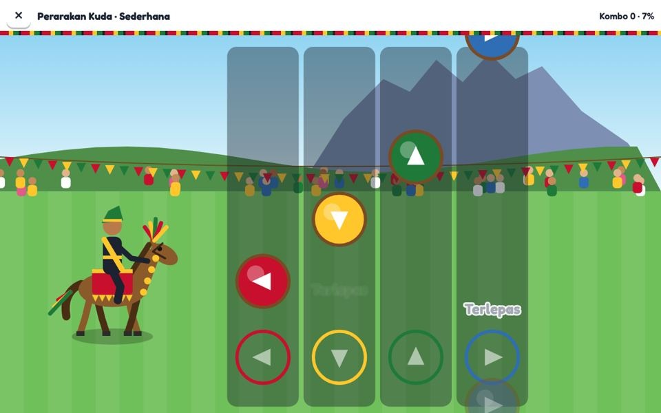
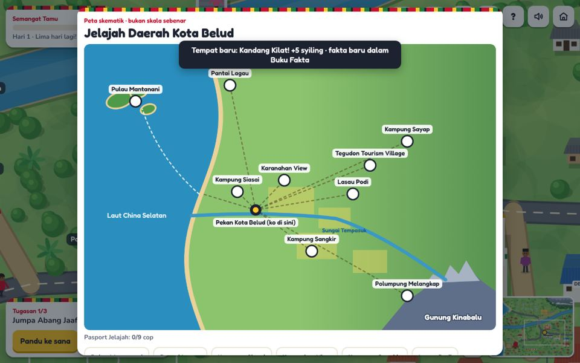

Snorkel Pulau Mantanani
Ambil gambar ikan dan penyu, tapi jangan sentuh. Elak ubur-ubur!
Game pelayar percuma tentang Kota Belud. Pilih laluan: ketuai perarakan Tamu Besar bersama kuda ko, Kilat, atau bertanding sebagai calon ADUN. Terokai tempat menarik di seluruh daerah!
Boleh dimain di telefon, tablet dan komputer. Tiada muat turun, tiada akaun.

Tekan butang kompas dalam game untuk ke destinasi sebenar di Kota Belud. Setiap tempat ada aktiviti dan fakta, dan ko boleh kumpul cop Pasport Jelajah.

Ambil gambar ikan dan penyu, tapi jangan sentuh. Elak ubur-ubur!

Tangkap gambar tahi bintang di bawah langit gelap tanpa lampu jalan.

Tebar jala tepat pada masanya untuk makan tengah hari keluarga.

Ikut rentak kompang dan ketuai perarakan kuda bersama Kilat yang berhias.

Game ni boleh dijadikan aktiviti kelas tentang tempat, budaya dan keselamatan:
Semua watak, parti dan pilihan raya dalam game adalah rekaan. Peta ialah lakaran, bukan skala sebenar.
Koboi Tempasuk percuma untuk semua. Kalau ko mahu bantu pembuatnya terus menambah tempat dan aktiviti baru, ko boleh menderma sebarang jumlah.
Sokong di Gumroad ♥Pssst!! Yang masih bawah umur minta benar dulu sama parents kalau mahu bagi support.